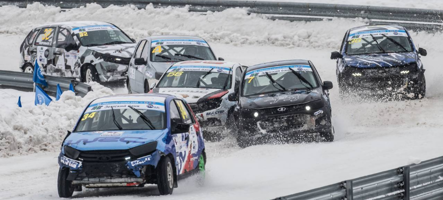
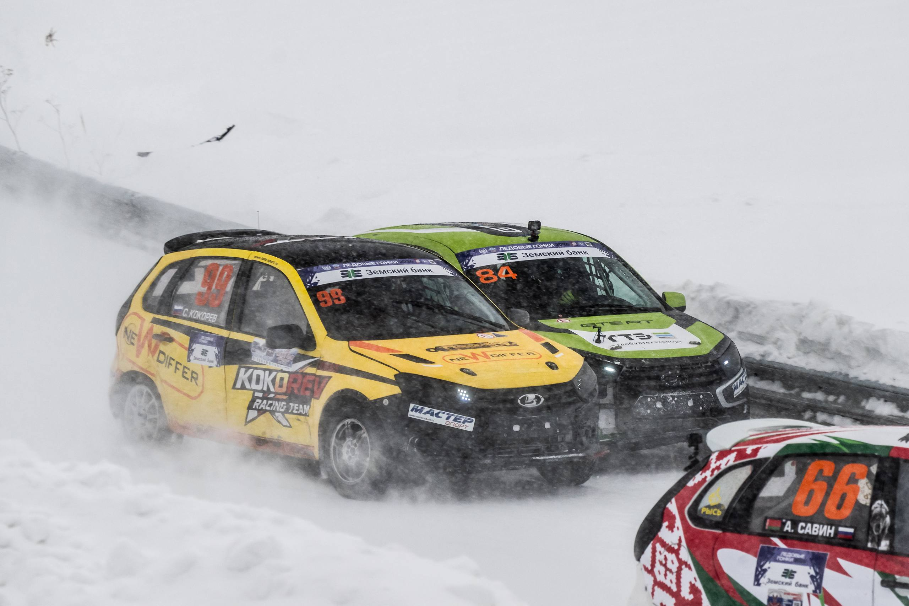
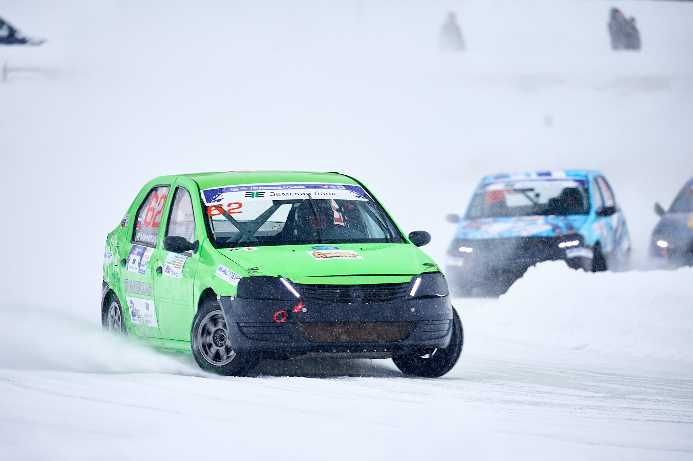

Специальные требования по подготовке автомобилей к ледовым гонкам
Все автомобили должны иметь Технический паспорт РАФ, соответствовать действующим Техническим требованиям, а также настоящим Специальным требованиям к автомобилям, участвующим в ледовых гонках. В случае противоречий приоритет отдается настоящим Специальным требованиям.
I. Подготовка автомобилей по классам
1. Кубок России (дисциплина «1400»)
Допускаются автомобили по ст.7 Приложения 3А (Национальный) или ст.6 (Д2Н). Renault SR (Logan) не допускаются. Для Kia Rio, Hyundai Solaris, Kia Rio X-Line — дополнительный гандикап 20 кг над задней осью.
Разрешена установка дроссельного узла АВТОВАЗ Ø54 мм, впускной коллектор пластмассовый (2112-1008600 и аналоги). Обязательны шины по п.3.1 Приложения 46 Регламента 2026.

2. Чемпионат России (дисциплина «1600»)
Автомобили по группе «Супер 1600» (безнаддувные). Максимальный объём двигателя — 1621 см³. Минимальный вес авто с пилотом: 1050 кг (16V) / 1000 кг (8V). При 4-дроссельном впуске +20 кг.

3. Кубок РАФ (дисциплина «Свободный»)
Только Renault Logan по Д2Н. Вес на переднюю ось ≤ 730 кг. Главная передача 4,214 (14x59). Шины по п.3.2 Приложения 46.

II. Разрешается во всех зачётах
- Подрезка бамперов для колёс, замена накладок на неоригинальные (с сохранением вида, веса, материала).
- Замена наружных зеркал (мин. площадь 40 см²).
- Замена стекол (кроме лобового и двери пилота) на прозрачный пластик ≥5 мм или поликарбонат 3 мм (без сверления).
- Замена блок-фар на противотуманные (мощность ламп ≥40 Вт или светодиодные).
- Установка/снятие стоп-сигналов, габаритов в салоне.
- Радиатор и вентиляторы — на штатных местах, разрешены жалюзи.
- Защита снизу: съёмная, суммарный вес ≤20 кг. При весе >10 кг требуется одобрение техделегата.
- Частичное удаление внутренних панелей дверей (кроме двери пилота).
- Герметизация стыков (капот, багажник, двери) негорючим материалом.
- Балласт — на полу пассажирского салона или багажника, может быть опломбирован.
- Брызговики позади колёс: из гибкого материала толщиной ≥5 мм, нижняя кромка не выше 10 см от земли.
- Усиление кузова/подвески одним слоем стали толщиной ≤2 мм, повторяя форму усиливаемой детали.
III. Обязательно для всех зачётов
- Если вес на переднюю ось превышен — дополнительный балласт позади сиденья пилота.
- В двери пилота — штатное стекло и стеклоподъёмник (электрический можно заменить на механический).
- Система пожаротушения (использование «МАГ» запрещено, ручные огнетушители запрещены).
- Прозрачная защитная плёнка на стёклах, зеркалах и рассеивателях света.
- Каркас безопасности по Приложению 14 (категория 1, схема 14-2). Мягкие накладки в местах контакта со шлемом/телом пилота.
- Удаление всех сидений, кроме пилотского.
- Шесть шин на соревнование, маркировка на техинспекции. Шипы проверяются с возможным извлечением.
- Уровень шума ≤103 дБ.
- Дверная сеть, система защиты головы/шеи (FIA №29/36).
- Фамилия пилота на передних крыльях (высота ≥40 мм) или задних боковых стёклах (≥50 мм).
- Задние красные стоп-сигналы, буксировочные устройства.
- Полный комплект омологационных документов (карта+расширения) с VIN и номером техпаспорта РАФ.
Таблица весовых ограничений (пилот в полной экипировке)
| Класс | Мин. вес автомобиля (кг) | Макс. вес на переднюю ось (кг) | Примечание |
|---|---|---|---|
| Кубок России 1400 (Национальный) | - | 685 | Kia/Hyundai +20 кг гандикапа |
| Кубок России 1400 (Д2Н) | - | 630 | Renault Logan запрещён |
| Чемпионат России 1600 (16V) | 1050 | 685 | +20 кг за 4 дросселя |
| Чемпионат России 1600 (8V) | 1000 | 685 | турбо +20 кг над задней осью |
| Кубок РАФ Свободный (Renault Logan) | - | 730 | передача 4,214 |
Дополнительная информация по шинам и двигателям
Предписанные шины — согласно Приложению 46 Регламента ЧР и КР по трековым и ледовым гонкам 2026 г. Для двигателей разрешено использовать не более двух топливных форсунок на цилиндр. Система впуска: разрешены оригинальные корпуса воздушного фильтра ВАЗ без доработок.
Все требования вступают в силу с 1 декабря 2025 года. Полный текст документа с подписями — в официальном PDF.